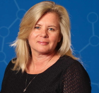
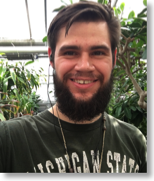

Team
Principal Investigators

Doreen Ware
Computational Biologist, Cold Spring Harbor Laboratory, Cold Spring, NY & USDA-ARS NAA Plant, Soil and Nutrition Laboratory Research Unit, Ithaca, NY
Matthew Hufford
Associate Professor, Department of Ecology, Evolution, and Organismal Biology, Iowa State University
Collaborators
Maggie Woodhouse
Computational Biologist, MaizeGDB, USDA-ARS, Corn Insects and Crop Genetics Research Unit, Ames, IA
Arun Seetharam
Associate Scientist, Genome Informatics Facility, ISU
Staff
Maggie Woodhouse
Computational Biologist, MaizeGDB, USDA-ARS, Corn Insects and Crop Genetics Research Unit, Ames, IA
Arun Seetharam
Associate Scientist, Genome Informatics Facility, ISU
Post-docs

Graduate Students

David Hufnagel
PhD Student, Hufford lab
Social